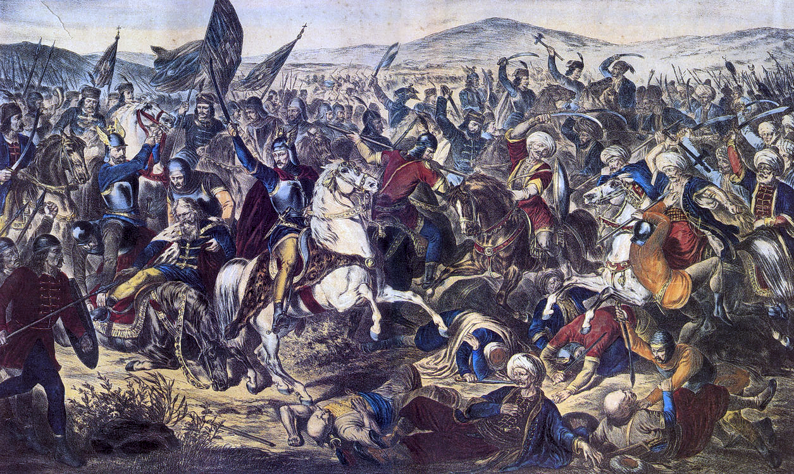

Uvod
Istorija Srba je bogata i kompleksna, obuhvatajući periode slavnih pobeda, teških poraza i stalne borbe za očuvanje identiteta i nezavisnosti. Srbi su kroz vekove prolazili kroz različite političke i društvene faze, formirajući jedinstvenu kulturnu i nacionalnu baštinu.
Rani Srednji Vek
Doseljavanje Srba na Balkan
Dinastija Vlastimirovića
Visoki Srednji Vek
Dinastija Nemanjić
Carstvo Nemanjića
Dušanov zakonik

Pad pod Osmanlije i Ustanci
Kosovski boj (1389)

Prvi srpski ustanak (1804–1813)
Drugi srpski ustanak (1815–1817)
Moderne Dinastije
Dinastija Obrenovića

Dinastija Karađorđevića
Prvi Svetski Rat
Sarajevski atentat (1914)
Srpska vojska u Prvom svetskom ratu
Drugi Svetski Rat i Jugoslavija
Drugi svetski rat
Socijalistička Federativna Republika Jugoslavija (1945–1992)
Savremena Istorija
Ratovi 1990-ih
Demokratske promene (2000)
Savremena Srbija